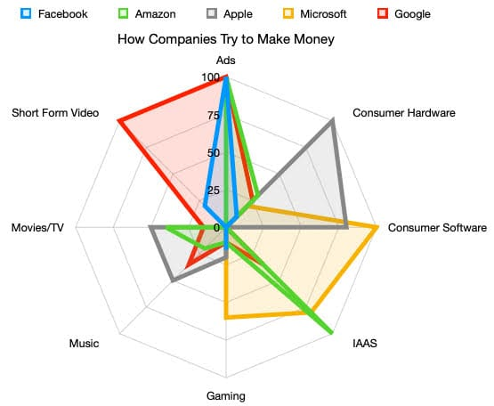
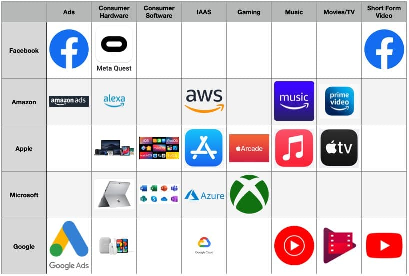

Welcome back one of my favorite recurring topics!
Tech Ecosystems: 2023
Technology is integrated almost every aspect of everything we do in our everyday lives. It’s everywhere around us, physically attached to us1. Technology is supposed to make our lives better and easier. Sometimes it succeeds at that, sometimes it’s completely overwhelming.
A recurring topic I have covered over the past ten years on here is the technology ecosystems of the day. I find it fascinating how these behemoth companies grow and evolve over time. What they decide to put energy towards and what they decide to avoid.
Here’s my thoughts on where we are at in 2023.

Image Credit
It’s amazing to me that Facebook is where it is today on the world’s stage. This huge thing that billions of people are using, but also in the most trouble of fully imploding of anything I’m writing about today. If you told me 10 years ago that Facebook would have just shy of 3 billion people on it, and that it was struggling to maintain relevance… I would not have believed you.
Facebook isn’t even the most relevant thing at Facebook Meta, it seems. Even if you, like me, are not be a “monthly active user” of Facebook, chances are good you regularly interact with something they own - Messenger, WhatsApp, Instagram, and/or Oculus.
Facebook wants to be there when you are hanging out with your friends.
Amazon
Amazon is synonymous with buying things on the internet. I have had 4 orders from Amazon over the last 4 weeks. Meanwhile the last time I bought something online that wasn’t from Amazon was… I don’t even remember. Amazon made a name for themselves being “the worlds most customer-focused company” and it paid off. Their “Prime” membership is, for many (most?) sort of like paying taxes. It’s become just a part of living.
Amazon is more than just shopping, though. They’ve got the obvious side hustles: Alexa and Prime Video. What’s more, they’ve got their servers running a surprisingly large proportion of the internet. When Amazon Web Services go down, there’s a pretty solid chance it will seem like everything around you just stops working. See this pretty entertaining article. The reason for that is that they were among the first to realize they could take the hassle out of managing web servers and databases, and decided to make that easy.
Amazon wants to handle all the tedious logistics of your business, so you don’t have to.
Apple
Apple is winning, both on the global scale and on a personal level. They are the largest company in the world, and they won me over after a number of annoyances perpetrated by Google. I just got my first Mac computer (more on that later) and it’s already awesome.
With the very successful transition to utilizing Apple-designed & Apple-fabricated chips in their laptops & desktops, they are just absolutely dunking on the competition. Apple is what every other company on this list wants to be: wildly successful across multiple markets and loved by its users.
Apple wants you to have the best, and to pay them for it.
Microsoft
The prodigal son. The first company I was consciously aware of for making technology stuff. Microsoft made its money on licensing its operating system, then ensured that its operating system was the de facto standard operating system by churning out the absolute king of office application suites. I think it’s not exaggerating to say that Microsoft Excel is in no small part responsible for the overall success of Microsoft.
They very nearly lost everything they were capable of losing during the Steve Balmer era. If you don’t know what that is, think about it as the “Windows Phone, Windows 8, Zune” era. When they replaced Balmer with their current CEO, things suddenly started looking up. Excel was now available on the Mac and in the cloud. They were happy to go where their customers were, rather than forcing them onto a new platform. This ensures their survival.
Microsoft wants to be the lynchpin of your business.
Google is nearly synonymous with “the internet”, and they don’t seem positioned to lose that status at any point in the near future. It was my favorite company for the better part of the past 15 years. They had such an incredible mission, and an incredible business model. They gave everyone super human abilities, essentially for free. You suddenly have easy and ready access to the answer to any general-knowledge question. You’re never lost again. You have the ability to collaborate on a document in real time.
Google is also, however, so incredibly afflicted with whatever the business equivalent is to ADHD. They get excited about an idea. They say “HEY EVERYONE! GOOGLE PLUS!” then give up on it. “HEY EVERYONE! GAMING IN THE CLOOOOUUUUUD!” then decide Stadia isn’t worth maintaining. Other things they never actually gave up on, but haven’t put any effort into - like their Google Health platform that’s roughly 3% as good as Apple Health.
Google wants to give you everything it can, for free.
The Radar Chart
These non-scientific radar charts illustrate my subject view of how involved each company is trying to make its money.

Making this chart was the primary reason I wanted to write this Column, actually. It’s completely made up and somewhat arbitrary, but represents how it seems to me each company is spending its energy in hopes to move their bottom line.
There are some fascinating combinations here - like, for example, Microsoft. They are heavily invested in running your business on-premise software, they want to run your business’s cloud, AND they want to be the gaming console you use to pwn noobs. Facebook has always been depended on advertising, but is moving into the consumer hardware and gaming spaces with the “Quest” VR headsets. Amazon wants to make a killing being the backbone of every transaction you make online, but also they’re cool giving you some side-hustle-ish benefits like Prime Video. Apple wants to sell everything you want to buy to run your technology on. Google has no idea what it wants.
Here it is in table form:

Note: I left some blanks where technically I shouldn’t have, like Amazon’s “Prime Gaming”, because… well… it’s not competitive.
Gaps in the Ecosystem
YouTube
Why is there no real competitor to YouTube? How weird is it that Apple’s announcement videos are hosted on YouTube? Facebook hosts short form videos, but there isn’t really a general “browse”, or the ability to perform general searches for things like “how to change the oil on a 2011 Ford Escape”.
Facebook’s IAAS
IAAS is “Infrastructure as a Service”. Amazon, Google, and Microsoft all will happily let you build web applications and host them in their datacenters. Apple hosts the App Store and enables developers to create and publish apps utilizing consumer devices… but it sure seems like Facebook should offer developers some form of paid product. Maybe they do and I’m just ignorant.
Mac Mini
I got an M2 Mac Mini. This is my first Apple-made traditional computer; and it completes my full transition to the Apple Ecosystem2. It’s brand new. This is literally one of the very first things I’m doing with the machine, so my perspective on it will evolve over time.
Its incredible how different everything feels on the Mac. Also how the Mac does NOT feel like “the simple computer”. MacOS exposes so much more in-depth stuff than Windows 10 does. I wanted a context menu option to open a folder in my code editor. To do that, I created a script in the Automator app and added it manually.
Top 5: Things I Can’t Make (yet)
5. Vector Art
I have all the necessary equipment, I just haven’t wrapped my brain around using the applications to make art.
4. Games Development
Proper video games, that is. I’ve never played with Unity, Unreal, or whatever else there is.
3. 3D Animations
This is interesting, but holy cow it’s intimidating to get started. Seems like the kind of thing you could spend 3 weeks on to make something that looks like it was made by a 5 year old in an hour.
2. Fine Art
I’ve never been good at painting. My drawing skills are amateurish (and sometimes not even that good), and I’ve never even been aware of an opportunity to make a sculpture.
1. Music
This takes talents I simply don’t have.
Quote:
It’s Charmeleon you imbeciles! Dalton